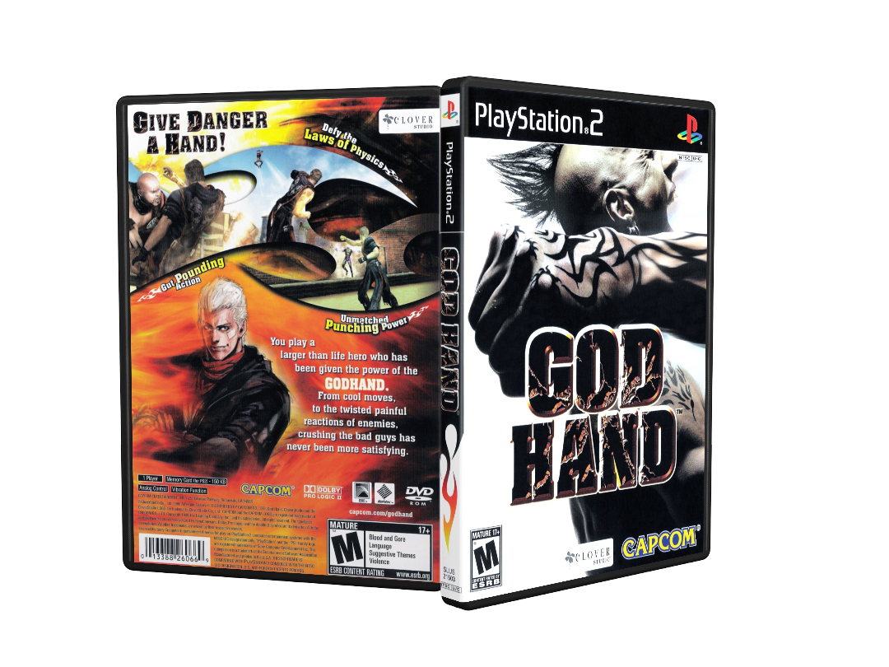
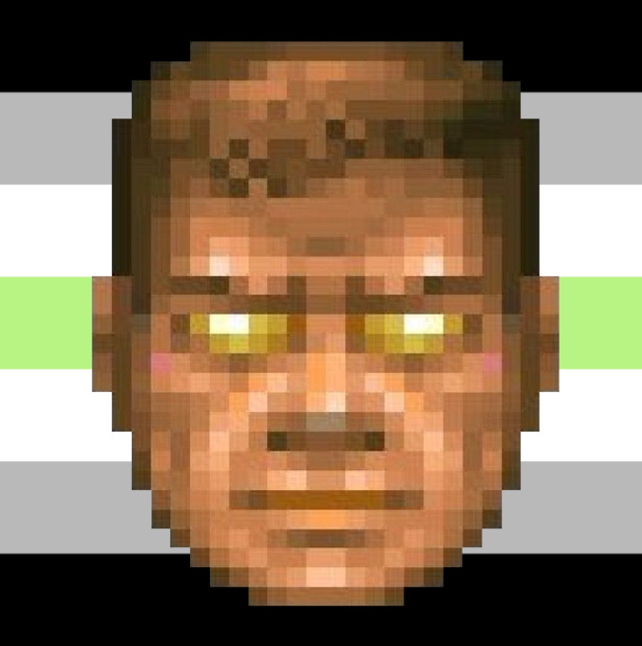

God Hand (PS2, 2006)
The brawler that punched logic straight in the face.
God Hand wasn’t just a game—it was chaos bottled into a controller. It mocked you, roasted you, and dared you to keep playing. Only the brave (and slightly unhinged) survived its combos. If you owned this on PS2, congratulations—you’re built different.
View Collection Learn MoreFor the True Retro-Connoisseur

PS2 is, was, and always will be the greatest console ever to exist.

PS2—the console that actually made legends. Fun fact: in MK3, Sub-Zero finally ditched his mask, while Scorpion didn’t even make the cut. Drama? Always.
Still not convinced? Then you clearly never blew into a disc tray praying the game would load. That’s real gaming.